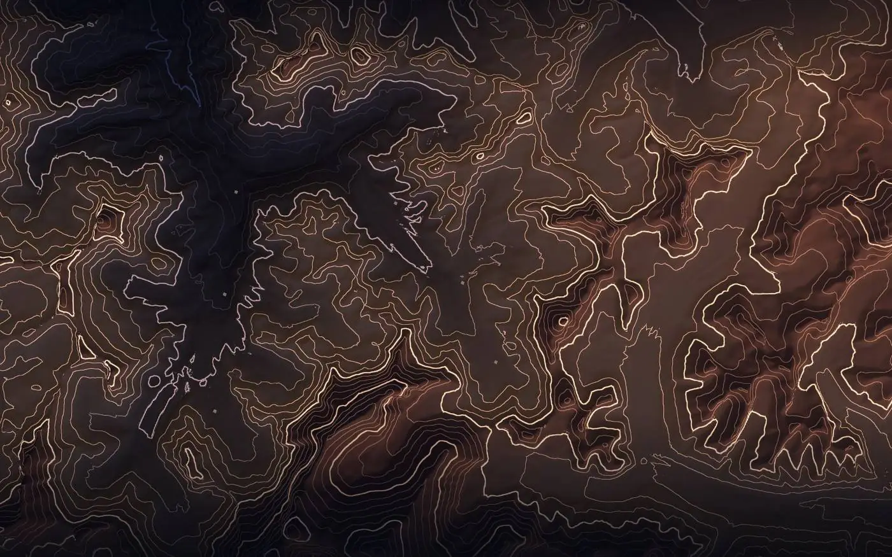
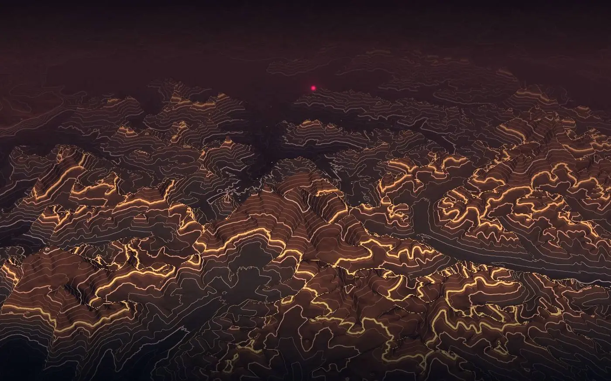

Making of
Un territoire réel, une lumière qui descend, des voix à découvrir.
La page d’accueil de GOKYO n’est ni une vidéo ni une image : c’est le relief réel du Khumbu, au Népal, calculé et dessiné en temps réel par votre navigateur, à chaque image.

00 Pourquoi
La montagne est un territoire d’effort et de patience. Pour atteindre les sommets, il faut avancer étape après étape, s’arrêter parfois, reprendre son souffle et poursuivre son chemin.
Au pied des grandes parois, les camps de base sont des lieux de rencontre et de préparation. On y partage une expérience, on y reprend des forces et on y prépare la suite de l’ascension.
C’est cette idée qui a inspiré la page d’accueil de GOKYO : un paysage à explorer, douze camps de base à découvrir et un parcours qui se révèle progressivement.
L’hélicoptère rose représente Finscale, le podcast de GOKYO. Il relie les différents camps et part à la rencontre de personnalités qui ont atteint les sommets dans leur domaine. À chaque étape, une nouvelle voix vient enrichir le voyage.
La montagne est réelle. Le parcours est une invitation à découvrir d’autres territoires : ceux de la finance, des entreprises et des expériences humaines.
— JBN
01 L’idée
Gokyo est un village du Khumbu, au Népal, situé à 4 790 mètres d’altitude, au pied du Cho Oyu. C’est aussi le nom de la société luxembourgeoise à l’origine du projet.
La montagne constitue le fil conducteur de l’identité visuelle. Elle évoque l’exploration, la persévérance et la progression. Des valeurs qui correspondent à la démarche de GOKYO.
La page s’ouvre dans la nuit. Puis l’aube apparaît sur les sommets de plus de 8 000 mètres et descend progressivement le long des pentes. Les vallées restent encore dans l’ombre, avant d’être à leur tour baignées de lumière.
02 La légende
Chaque élément du paysage a une fonction et une signification.
Le relief. Il représente une région réelle de l’Himalaya : le Khumbu. Il constitue aussi une métaphore de la finance, un environnement complexe dont il faut apprendre à lire les reliefs pour en comprendre les enjeux.
La compagnie. GOKYO n’apparaît pas directement dans le paysage. Elle est représentée par l’hélicoptère, qui incarne son activité et sa vocation : aller à la rencontre de ceux qui font avancer leur domaine.
L’hélicoptère rose. C’est Finscale, le podcast de GOKYO. Il relie les différents camps de base et part à la rencontre de ses invités. Chaque escale correspond à une conversation et à une expérience à partager.
Les douze camps de base. Ils représentent les douze grands thèmes du podcast. Namche Bazaar, Tengboche, Gokyo, le camp de base de l’Everest ou celui du Makalu deviennent les étapes d’un parcours à travers différents univers.
La voix dorée. À chaque escale, une lumière apparaît et rejoint l’hélicoptère. Elle représente l’invité d’un épisode : une personnalité qui partage son expérience et son regard sur son domaine.
Le carnet de bord. En haut à gauche, une fiche présente l’épisode associé au parcours : son numéro, son titre, son invité et sa société. Son contenu est actualisé quotidiennement.

03 Les données
Le relief provient du modèle numérique de terrain Copernicus DEM GLO-30 (DLR et Airbus Defence and Space, pour l’Union européenne et l’ESA).
Un disque d’environ 80 km de diamètre, ramené à une résolution de 88 mètres par point, englobe notamment le Cho Oyu, l’Everest, le Lhotse et le Makalu.
La hauteur du relief est exagérée d’environ 1,5 fois afin de mieux faire ressortir les variations d’altitude et les pentes.
Les courbes de niveau sont espacées de 200 mètres, avec un tracé renforcé tous les 1 000 mètres.
Au-delà de la zone géographique réelle, les courbes se prolongent sur un sol plat. Cette représentation graphique permet de conserver la continuité du paysage jusqu’à l’horizon.

04 La technique
Tout est développé à la main, sans bibliothèque graphique ni framework. Un programme WebGL2 réalise l’ensemble du rendu.
Pour chaque pixel, un rayon est lancé afin de déterminer son intersection avec le relief. Le programme calcule ensuite l’éclairage, les courbes de niveau et la brume atmosphérique.
Les courbes sont générées à partir de la pente apparente du terrain. Elles conservent ainsi une épaisseur régulière, quelle que soit la distance de visualisation.
Quelques choix techniques structurent le fonctionnement de la scène :
- La caméra, la lumière de l’aube et la courbe dorée suivent une animation synchronisée sur un cycle de 24 secondes.
- Le calcul graphique est limité au disque de relief réel. Le prolongement du paysage est calculé séparément, en une seule étape.
- Le rendu est optimisé pour fonctionner de manière fluide sur les appareils mobiles.
- Sur les appareils ne disposant pas de capacités graphiques suffisantes, la scène 3D est remplacée par une image fixe du même relief.
- La page d’accueil ne dépose aucun cookie et n’utilise aucun outil de mesure d’audience.
05 Le son
La musique est facultative. Elle ne démarre que si le visiteur choisit de l’activer.
Le morceau utilisé est « Transcend », avec l’autorisation de MorningLightMusic.io.
06 Crédits
Conception et réalisation : NiderLabs by JBN.
Éditeur : GOKYO S.à r.l.-S, Luxembourg.
Données géographiques : Copernicus DEM GLO-30 © DLR e.V. 2010-2014 et © Airbus Defence and Space GmbH 2014-2018, fournies dans le cadre du programme COPERNICUS par l’Union européenne et l’ESA. Tous droits réservés.
← Retour à la pageMaking of
A real landscape, a light coming down, voices to discover.
The GOKYO homepage is neither a video nor a picture: it is the real terrain of the Khumbu, in Nepal, computed and drawn in real time by your browser, frame after frame.
00 Why
Mountains are a land of effort and patience. To reach the summits, you move forward stage by stage, stop at times, catch your breath and carry on.
At the foot of the great faces, base camps are places of meeting and preparation. People share an experience there, recover their strength and prepare the rest of the climb.
This is the idea behind the GOKYO homepage: a landscape to explore, twelve base camps to discover and a journey that unfolds little by little.
The pink helicopter stands for Finscale, GOKYO’s podcast. It links the camps and goes to meet people who have reached the summits of their field. At every stage, a new voice adds to the journey.
The mountain is real. The journey is an invitation to discover other territories: those of finance, of companies and of human experience.
— JBN
01 The idea
Gokyo is a village in the Khumbu, in Nepal, at an altitude of 4,790 metres, at the foot of Cho Oyu. It is also the name of the Luxembourg company behind the project.
The mountain is the common thread of the visual identity. It evokes exploration, perseverance and progress: values that match GOKYO’s approach.
The page opens at night. Then dawn appears on the peaks above 8,000 metres and gradually moves down the slopes. The valleys stay in shadow a while longer, before they too are bathed in light.
02 The legend
Every element of the landscape has a function and a meaning.
The terrain. It represents a real region of the Himalaya: the Khumbu. It is also a metaphor for finance, a complex environment whose relief one must learn to read in order to understand what is at stake.
The company. GOKYO does not appear directly in the landscape. It is represented by the helicopter, which embodies its activity and its purpose: going to meet those who move their field forward.
The pink helicopter. This is Finscale, GOKYO’s podcast. It links the base camps and goes to meet its guests. Each landing is a conversation and an experience to share.
The twelve base camps. They represent the twelve main themes of the podcast. Namche Bazaar, Tengboche, Gokyo, Everest Base Camp or Makalu Base Camp become the stages of a journey through different worlds.
The golden voice. At every landing, a light appears and joins the helicopter. It represents the guest of an episode: someone who shares their experience and their view of their field.
The logbook. In the top-left corner, a card presents the episode linked to the journey: its number, title, guest and company. Its content is updated daily.
03 The data
The terrain comes from the Copernicus DEM GLO-30 digital elevation model (DLR and Airbus Defence and Space, for the European Union and ESA).
A disc about 80 km across, resampled to 88 metres per point, takes in Cho Oyu, Everest, Lhotse and Makalu, among others.
Heights are exaggerated about 1.5 times to bring out the changes in altitude and the slopes.
Contour lines are 200 metres apart, with a stronger line every 1,000 metres.
Beyond the real geographic area, the contours continue over flat ground. This graphic device keeps the landscape continuous all the way to the horizon.
04 The craft
Everything is hand-coded, with no graphics library or framework. A single WebGL2 program does all the rendering.
For each pixel, a ray is cast to find where it meets the terrain. The program then computes the lighting, the contour lines and the atmospheric haze.
The contours are generated from the apparent slope of the terrain, so they keep an even thickness at any viewing distance.
A few technical choices shape how the scene works:
- The camera, the dawn light and the golden contour follow one animation, synchronised on a 24-second cycle.
- Rendering work is limited to the disc of real terrain. The extension of the landscape is computed separately, in a single step.
- Rendering is optimised to run smoothly on mobile devices.
- On devices without sufficient graphics capability, the 3D scene is replaced by a still image of the same terrain.
- The homepage sets no cookies and uses no analytics tools.
05 Sound
Music is optional. It only starts if the visitor chooses to turn it on.
The track is “Transcend”, courtesy of MorningLightMusic.io.
06 Credits
Design and development: NiderLabs by JBN.
Publisher: GOKYO S.à r.l.-S, Luxembourg.
Geographic data: Copernicus DEM GLO-30 © DLR e.V. 2010-2014 and © Airbus Defence and Space GmbH 2014-2018, provided under the COPERNICUS programme by the European Union and ESA. All rights reserved.
← Back to the page